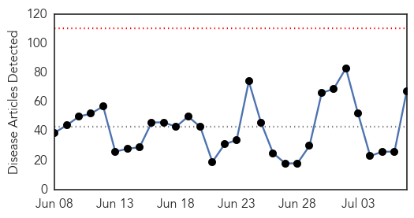
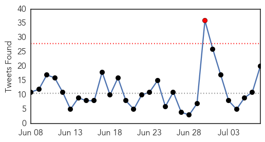
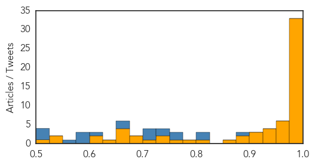

West Nile Virus
30-Day Web Trend
2 alerts, 0 warnings

30-Day Twitter Trend
3 alerts, 0 warnings

Article Locations
Article Confidences

Top Articles:
- 0.999
- West Nile virus in more California counties this season
- 0.994
- First Confirmed Case of West Nile Virus in Maricopa County
- 0.990
- West Nile virus spread faster this season than last year
- 0.989
- Mosquito control crews battle outbreak of pests in Bay Area
- 0.979
- Human trials begin for West Nile Virus vaccine
- 0.979
- West Nile virus returns to Weber County
- 0.972
- Mosquitoes Carrying the West Nile Virus Detected in Chicago Suburbs
- 0.944
- Mosquitoes Test Positive for West Nile Virus in Skokie
- 0.941
- NIH-sponsored clinical trial evaluates new investigational vaccine against West Nile Virus infection
- 0.940
- New York Residents reminded of Dangers of West Nile Virus
- 0.938
- West Nile virus found in Fort Collins
- 0.931
- West Nile virus found in Fort Collins
- 0.842
- The New York health department has disclosed that mosquitoes harvested from Selden, New York, tested positive to the West Nile virus
- 0.835
- Discovery Of West Nile Mosquitos In Area Prompts Preventative Measures
- 0.824
- Prevent Mosquito Bites
- 0.673
- Heat, rain bring influx of mosquitoes
- 0.645
- Latest batch of mosquitoes tests negative for virus
- 0.549
- Utah is headed into mosquito season; time for precautions
Top Tweets:
-
No tweets found for Jul 07, 2015
Ebola
30-Day Web Trend
0 alerts, 0 warnings

30-Day Twitter Trend
1 alerts, 0 warnings

Article Locations
Article Confidences
Top Articles:
- 1.000
- Mugabe flies out; again, for New York
- 1.000
- Philippines MERS Virus News Update
- 1.000
- Liberian Official Died in Nigeria After Being Suspected Of Ebola
- 1.000
- Liberia Records Ebola Death After Country Declared Virus-Free
- 1.000
- Ebola News: Deadly Virus Reappears in Liberia, Claims Life of Teenager
- 1.000
- Dont worry , be horny!
- 0.999
- Liberia registers 2nd confirmed Ebola case
- 0.999
- Ebola Recovery Focuses on Strengthening Africa’s Health Systems
- 0.999
- WHO is 'unfit to deal with global emergencies' like the Ebola epidemic, says report
- 0.999
- Report slams WHO for slow Ebola response
- 0.999
- Panel of experts finds the World Health Organization lacks the ‘capacity and culture’ to deal with global health emergencies
- 0.999
- Liberia Records Ebola Death After Country Declared Virus-Free
- 0.998
- Welsh doctor who bravely risked her life to battle Ebola in Liberia honoured with special medal by David Cameron
- 0.998
- Worrying Signs: WHO Reports 200 Traces After Ebola Resurgence
- 0.998
- Michigan gets $5.5M to train for Ebola
- 0.997
- Initial Ebola test on Liberia dog carcass negative: sources
- 0.996
- The Scientist Magazine®
- 0.994
- WHO independent panel calls out Ebola response flaws
- 0.993
- Panel: Politics among reasons for botched UN Ebola response
- 0.993
- Panel: Politics among reasons for botched UN Ebola response
- 0.992
- Changes urged at World Health Organization after bungled Ebola response
- 0.991
- Report: Ebola Outbreak Exposed “Organizational Failings” at WHO
- 0.991
- WHO 'unfit for health emergencies'
- 0.991
- Ebola-stricken nations need $700 million to rebuild healthcare
- 0.990
- Panel Calls W.H.O. Unfit to Handle a Crisis Like Ebola
- 0.989
- Politics, Bureaucrats Slowed WHO's Ebola Response, Report Says
- 0.987
- WHO 'unfit for health emergencies'
- 0.987
- Global Pandemic Risk: MERS Update July 6, 2015
- 0.987
- Ebola-stricken nations need $700 mln to rebuild healthcare
- 0.983
- WHO 'not fit for purpose' on Ebola
- 0.981
- Success of Ebola Lawsuits in Texas Would Have Long Odds
- 0.979
- Even after Ebola, the world isn't close to ready for another Ebola
- 0.979
- Liberia: Building back stronger communities after Ebola
- 0.972
- Why did Thomas Duncan have to die?
- 0.971
- WHO Emergency Committee Meets to Revisit Ebola Outbreak Status in West Africa
- 0.970
- GAVI Alliance (via noodls) / Gavi to support rebuilding of immunisation programmes in Ebola-affected countries
- 0.969
- Statement on the 6th meeting of the IHR Emergency Committee regarding the Ebola outbreak in West Africa
- 0.957
- Gov’t brags over capacity to fight Ebola
- 0.953
- Rep. Phil Gingrey warns you might get Ebola from immigrants
- 0.944
- WHO incapable of reacting to crises such as Ebola, says report
- 0.939
- Special medals made for Ebola heroes
- 0.934
- WHO not fit for purpose over Ebola crisis
- 0.929
- Canada’s Ebola vaccine delays may have cost lives, professor says
- 0.923
- ScienceInsider
- 0.903
- Updated: Independent group pans WHO's response to Ebola
- 0.903
- Updated: Independent group pans WHO's response to Ebola
- 0.895
- WHO needs urgent change to tackle health crises: experts
- 0.890
- CDC to hire lab safety chief after Ebola, bird flu mishaps
- 0.867
- Ebola hero receives medal at 10 Downing Street
- 0.804
- Global health news and commentary brought to you by PSI
Showing top 50 articles...
Top Tweets:
- 0.975
- Even after Ebola, the world isn't close to ready for another Ebola - Vox http://t.co/Wcy0OZI2K6 ebola EVD
- 0.969
- Initial Ebola test on Liberia dog carcass negative - sources - Reuters UK http://t.co/M6N3NdMIxw ebola EVD
- 0.958
- Independent group pans WHO's response to Ebola - Science /AAAS http://t.co/sQg1FJFHKd ebola EVD
- 0.949
- Panel blames politics for botched UN Ebola response - Toledo Blade http://t.co/TbjS0iQylc ebola EVD
- 0.939
- WHO gets failing grade for Ebola response - Politico http://t.co/UA4uvKO4TK ebola EVD
- 0.934
- .@WHO's Ebola Emergency Committee says Ebola is still a global health emergency. http://t.co/ZTdBEP9ZjB
- 0.928
- Content Management in Ebola Response - Health Data Management http://t.co/m5h7wrwhaO ebola EVD
- 0.892
- WHO's 21-step program to better tackle Ebola-level health crises - PBS NewsHour (blog) http://t.co/ZZgpDre1Yc ebola EVD
- 0.873
- RT: @Eboladeeply Why Does MERS Get More Attention on Google Than Ebola Did? https://t.co/Luag0a6Qvm via Ebola http://t.c…
- 0.870
- Health Ministry Updates Media On Ebola - http://t.co/NaiI6Jl8yj http://t.co/YxD0U6GufO ebola EVD
- 0.861
- Societal challenges and new treatments for Ebola virus disease - Medical Xpress http://t.co/9FWtAsQndc
- 0.819
- RT: World Health Organization lacks "capacity & culture" to deal with global health emergencies, Ebola report to say http:/…
- 0.812
- Liberia: Building back stronger communities after Ebola - International Federation of Red Cross an... http://t.co/hbpP4zVynX ebola EVD
- 0.804
- Avant la phase de résidence d'Africa Stop Ebola qui aura lieu du 21 au 27 juillet, nous vous présentons chaque... http://t.co/koGErfp9xk
- 0.789
- Rebuilding Liberia HealthCare ebola http://t.co/WQSjgcGtmg
- 0.788
- Statement on the 6th meeting of the IHR Emergency Committee regarding the Ebola outbreak in West Africa http://t.co/o1CDgs45ol
- 0.764
- RT: Statement on the 6th meeting of the IHR Emergency Committee regarding the Ebola outbreak in West Africa http://t.co/J0zLJGvh…
- 0.753
- Welsh doctor who bravely risked her life to battle Ebola in Liberia honoured ... - WalesOnline http://t.co/F7K5HG48tm ebola EVD
- 0.753
- Ebola report: The Ebola Interim Assessment Panel's report is here: http://t.co/BYYdHHZdAg
- 0.752
- Ebola report: Nearly 1/4 of's member states instituted travel bans & similar measures in defiance of the International Health Regs 2/n
- 0.743
- Reemergence of Ebola in Liberia raises concerns as to whether the virus ever left. @LiveScience investigates: http://t.co/LM5hIvwqtp
- 0.723
- Sierra Leone announces new curfew for 3 weeks to halt the spread of Ebola http://t.co/8tKbMu93ey
- 0.717
- Panel: Blame politics for botched UN Ebola response - http://t.co/KIS21bm5aE http://t.co/hIVw1ZH9wj ebola EVD
- 0.707
- Culture Shock: Liberia Ebola Cases No Surprise http://t.co/0npgPKhMOW
- 0.698
- Midlands Voices: Teamwork vital to hospitals' national Ebola center designation - Omaha World-Herald http://t.co/OFmAxjCHyY ebola EVD
- 0.676
- Initial Ebola test on Liberia dog carcass negative - sources - Reuters UK http://t.co/kiJJD68SOs
- 0.667
- AFD Blog `@WHO Statement On 6th IHR Emergency Committee Meeting On West Africa’s Ebola Outbreak' http://t.co/x55kKLI92O
- 0.656
- .@WHO DG Chan says there is no public health justification for blocking travel from Ebola affected countries. Believe Canada still does.
- 0.618
- 7 July - news pouch on avianflu avianinfluenza Ebola EbolaResponse MERS is here: http://t.co/nqMomdszWi
- 0.591
- The Ebola outbreak is not over yet. The WHO EbolaResponse continues, until GettingtoZero http://t.co/paO4DGT2c6 http://t.co/bqoRvTywop
- 0.589
- Ebola outbreak highlighted the separation between systems for responding to health emergencies and systems for humanitarian response
- 0.557
- RT: The Ebola outbreak is not over yet. The WHO EbolaResponse continues, until GettingtoZero. http://t.co/paO4DGT2c6 http://t.co/gY…
- 0.548
- Michigan gets $5.5M to train for Ebola - http://t.co/JhmWhDh3bw http://t.co/DA18cI2QYV ebola EVD
- 0.530
- Ebola recovery is impossible unless resilient health systems are rebuilt http://t.co/ISn15OMsLc
- 0.516
- How can we use lessons learned to stop any further outbreak of Ebola in W. Africa? Tweet us your thoughts!
- 0.512
- Liberia. Over 200 Had Contact With Ebola Victim http://t.co/3Sh8Gsv1Zo liberia via